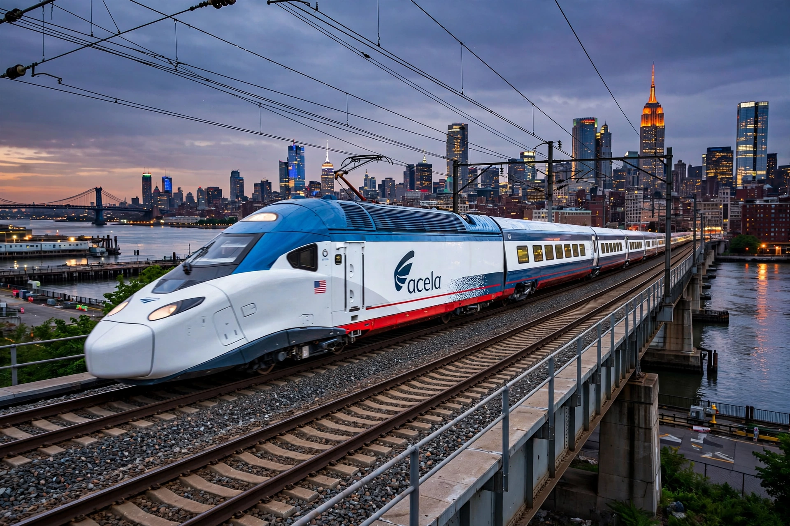

The Northeast Corridor (NEC) is an electrified railroad line in the Northeast megalopolis of the United States, owned primarily by Amtrak, running 457 miles (735 km) from Boston through New York City, Philadelphia and Baltimore to Washington, D.C.

| Northeast Corridor | |
|---|---|
| Termini | Boston – Washington, D.C. |
| Length | 457 mi (735 km) |
| Owner | Amtrak (majority) |
| Services | Acela, Northeast Regional, commuter rail |
The NEC is the busiest passenger rail line in the US, hosting Amtrak's Acela high-speed trains (up to 150 mph), Northeast Regional, long-distance trains, and eight commuter rail agencies including NJ Transit, SEPTA and MBTA. Over 2,200 trains run daily on parts of it.
Built by the Pennsylvania Railroad and New York, New Haven and Hartford Railroad, electrified in stages by 1935. Transferred to Amtrak in 1976. Ageing tunnels and bridges, notably the Hudson Tunnel and Baltimore & Potomac Tunnel, are being replaced under the Gateway Program and NEC Future plans.